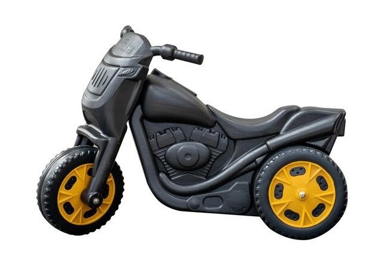

A scooter game can refer to various types of games that involve scooters, ranging from video games to physical activities. Here are a few detailed descriptions for different types of scooter games:
- Scooter Racing Video Games:
- Scooter racing games are a sub-genre of racing video games where players control a scooter and race against other players or computer-controlled opponents. These games often feature vibrant graphics, diverse tracks, and various scooters to choose from. Players can perform stunts, collect power-ups, and compete in different race modes. Examples include "Scooter Racer" and "Crazy Taxi" (which includes scooters as a vehicle option).
- Physical Scooter Games:
- These are outdoor games played with actual scooters, often designed for children and teenagers. They can involve racing, performing tricks, or navigating obstacle courses. Examples include:
- Scooter Races: Players race against each other on their scooters, either on a straight path or a track with turns and obstacles.
- Trick Competitions: Players perform various tricks on their scooters, such as jumps, spins, and grinds. Points are awarded based on difficulty and execution.
- Scooter Tag: One player is "it" and must chase and tag the other players, who are all on scooters. Once tagged, the tagged player becomes "it."
- Scooter Board Games:
- Some board games incorporate scooters into their gameplay. These games might involve moving pieces around a board to simulate a scooter race or adventure. An example is "Scooter's Race," where players roll dice to advance their scooter pieces on a race track.
- Mobile Scooter Games:
- These are games designed for smartphones and tablets, offering a quick and fun way to enjoy scooter racing and stunts. Players can control their scooters using touch controls, and the games often include levels with increasing difficulty, customization options for scooters, and various challenges. Examples include "Scooter Freestyle Extreme 3D" and "Touchgrind Scooter."
- Scooter Obstacle Courses:
- In this physical game, players navigate a course filled with various obstacles, such as cones, ramps, and balance beams, on their scooters. The goal is to complete the course in the shortest time without knocking over obstacles or falling off the scooter. This game encourages agility, balance, and coordination.
- Scooter Polo:
- A team sport where players on scooters use mallets to hit a ball into the opposing team's goal. It's similar to traditional polo but adapted for scooters. This game requires teamwork, strategy, and scooter handling skills.